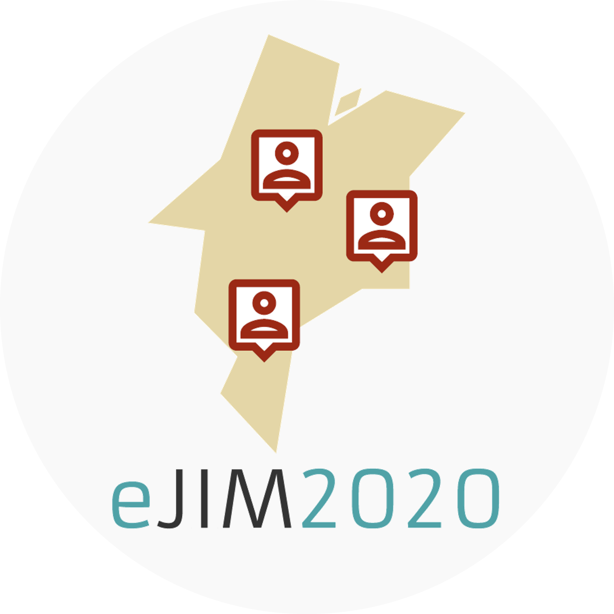
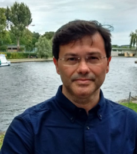

Oficinas e Webinars que serão ministrados durante o evento.
Dia 29/06/2020 - Segunda-feira

Abertura Organização
Descrição
Mesa Redonda: "Ensino a distância mediado por Computação"
Com Renata Luz (UNIRON), Ilma Rodrigues (IFRO) e Alana Oliveira (UFMA)
Dia 30/06/2020 - Terça-feira

Webinar Pesquisa e Inovação 1: "Processamento de fluxos de eventos em Cidades Inteligentes"
Com Francisco Silva (UFMA)
Dia 01/07/2020 - Quarta-feira
Webinar Industria na Área de TI 1: "Trajetória Acadêmica na Computação"
Com Leo Jefferson Marinha (Microsoft)
Dia 02/07/2020 - Quinta-feira
Webinar Pesquisa e Inovação 2: "Cidades Inteligentes e Inteligência Computacional: Uma parceiria de sucesso"
Com Luiz Satoru Ochi (UFF)
Dia 03/07/2020 - Sexta-feira
Webinar Industria na Área de TI 2: "Uma carreira em Ciência de Dados: Possibilidades e aplicações na indústria"
Com Meigarom Lopes (LOFT)
Dia 04/07/2020 - Sábado
Competições E-sports
Campeonato de X1 de League of Legends
Dia 05/07/2020 - Domingo
Competições E-sports
Campeonato de Valorant
Dia 06/07/2020 - Segunda-feira
Competição de Objetos de Aprendizagem de Conteúdo Educacional em Computação
Tutorial de Computação 1: Controle de Versões de Software com GIT
Com Eduarda Chagas (PETComp) e Nathasha Pinto (PETComp)
Tutorial de Informática Básica 1: Entenda Seu Computador: Noções Básicas de Hardware e Funcionamento de Computadores
Com Guilherme Carvalho (PETComp) e Luis Gustavo (PETComp)
Dia 07/07/2020 - Terça-feira
Tutorial de Computação 2: Código Limpo e Boas práticas em JavaScript
Com Pedro Arthur (PETComp) e Jadiel Jr (PETComp)
Tutorial de Informática Básica 2: Pensamento Computacional: Resolvendo Problemas do Cotidiano Aplicando Princípios de Computação
Com Arthur Passos (PETComp) e Daniel Moreira (PETComp)
Dia 08/07/2020 - Quarta-feira
Tutorial de Computação 3: Introdução a Banco de Dados
Com Arthur Passos (PETComp) e Daniel Moreira (PETComp)
Tutorial de Informática Básica 3: Introdução de Segurança na Web
Com Pedro Arthur (PETComp) e Jadiel Jr (PETComp)
Dia 09/07/2020 - Quinta-feira
Tutorial de Computação 4: Desenvolvimento Web com React Js
Com Gabriel Sousa (PETComp) e Pedro Arthur (PETComp)
Tutorial de Informática Básica 4: Aprenda a Usar Ferramentas de Produtividade Online: Uso Aplicado de Ferramentas de Uso Livre
Com Daniel Moreira (PETComp) e Kennedy Anderson (PETComp)
Dia 10/07/2020 - Sexta-feira
Competição de Desenvolvimento de Soluções para Ensino Virtual
Encerramento da Competição
Tutorial de Computação 5: Desenvolvimento Mobile com React-Native
Com Gabriel Sousa (PETComp) e Ricardo Anchieta (PETComp)
Tutorial de Informática Básica 5: Uso de Tecnologia de Informação e Comunicação na Realização de Aulas e Apresentações Virtuais
Com Felicia Silva (PETComp) e Eduarda Chagas (PETComp)
Dia 11/07/2020 - Sábado
Competições E-sports
Campeonato de Valorant (Semi finais)
Dia 12/07/2020 - Domingo
Competições de E-sports
Campeonato de Valorant (Final)
Dia 13/07/2020 - Segunda-feira
Apresentações de Artigos:
Estudo de redes Dense para Detecção de Pneumonia em Radiografias de Peito Pediátricas
Autores: Antônio Pinto e Geraldo Braz
Detecção de Glaucoma em Imagens de Fundo de Olho através de Triplet Loss
Autores: Lisle Faray de Paiva, Gabriel Sousa Silva Costa e Geraldo Braz Junior
Diagnóstico de Melanoma Utilizando Rede de Cápsulas
Autores: Gabriel Cardoso, Thamila Fontenele, Matheus Boaro e Geraldo Braz
Classificação de glóbulos brancos usando descritores de textura e XGBoost
Autores: Domingos Alves Dias Junior e Geraldo Braz Junior
Redes Neurais Multinível para Detecção de Glaucoma de ngulo Fechado em Imagens TCO
Autores: Marcos Ferreira, Giovanna Pavani Esteve, Geraldo Braz Junior, João Dallyson Sousa de Almeida, Anselmo Cardoso de Paiva e Rodrigo Veras
Planejamento automático de cirurgias de estrabismo utilizando Extra Tree Regressor
Autores: Fernando Henrique Fernandes Leite, João Dallyson Sousa de Almeida, Jorge Antonio Meireles Teixeira e Geraldo Braz Junior
Aprendizado, Computação e Medicina: Um Estudo sobre Detecção de Doenças Torácicas
Autores: Gustavo Gomes, Pedro Dias, Anselmo Paiva e Geraldo Braz Junior
Diagnóstico Automático de Glaucoma Utilizando Transfer Learning
Autores: Joao Moreira, Joao Almeida e Geraldo Braz Junior
Dia 14/07/2020 - Terça-feira
Apresentações de Artigos:
Peça em Casa: Desenvolvimento de Um Aplicativo para Apoiar o Isolamento Social em Tempos de Pandemia
Autores: Gabriel Sousa, Alana Araujo, Jose Durand, Eduarda Chagas, Luis Dias, Nathasha Araujo Pinto, Ricardo Jose Fernandes Anchieta Junior e Luis Jorge Enrique Rivero Cabrejos
Adoção de Práticas EaD como Forma de Capacitação e Aperfeiçoamento Durante a Quarentena
Autores: José Ribamar Durand Rodrigues Junior, Arthur Marinho Dos Passos, Carlos Vinicius Silva Da Silva, Daniel Moreira Pinto, Eduarda Chagas, Gabriel Sousa, Kennedy Anderson Mendes Nunes, Maikon Keslley Costa, Pedro Arthur Freitas Dias e Luis Jorge Enrique Rivero Cabrejos
Criando uma Revista Interativa para Divulgar Histórias de Mulheres na Computação
Autores: Guilherme De Carvalho Silva, Daniel Moreira Pinto, Karla Felicia Carvalho Da Silva, Gabriel De Jesus Santos Costa, Jadiel Costa Santos Junior, Maikon Keslley Costa e Luis Jorge Enrique Rivero Cabrejos
Análise de Ferramentas de Gerenciamento para Testes de Software: Identificando Oportunidades de Melhoria
Autores: Dayanne Cristina Pereira Gomes, Kennedy Anderson Mendes Nunes, Carlos Vinicius Silva Da Silva, Estephane Mendes Nascimento, Luis Dias, Pedro Arthur Freitas Dias, Geraldo Braz Junior e Luis Jorge Enrique Rivero Cabrejos
Implementação e análise de uma engine para expressões regulares em Coq via testes baseados em propriedades
Autores: Marcos Vinicius Moreira Serra Benevides, Sérgio Souza Costa e Rodrigo Geraldo Ribeiro
A Multi-Level Descriptor Using VGG Model for Osteoporosis Diagnosis
Autores: Thamila Fontenele, Geraldo Braz e Anselmo Paiva
Autoleitura do Consumo de Energia Elétrica por meio de Assistente Virtual Inteligente para Aplicativos de Mensagem
Autores: Carlos V. M Rocha, Gabriel X. Bras, Lisle F. de Paiva, Italo Francyles S. Silva, Simara Rocha, Aristófanes Silva, Eliana Monteiro, Italo Fernandes Silva e Eduardo Fernandes
Teste automático de Bruckner utilizando Deep Learning
Autores: Antônio Pinto, João Almeida, Geraldo Braz e Italo Silva
Dia 15/07/2020 - Quarta-feira
Maratona de Programação
Início da Competição
Webinar Pesquisa e Inovação 3: "Lei de Proteção de Dados: Jurisdição e impactos tecnológicos"
Com Renata Luz (UNIRON) e Marcio Pereira Bassani (Secretaria TED-OAB/RO)
Dia 16/07/2020 - Quinta-feira
Maratona de Programação
Encerramento da Competição
Webinar Industria na Área de TI 3: "Bate papo com especialista em Chatbots: Experiência no mercado de trabalho"